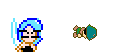
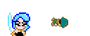
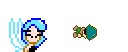

"LOOSE ENDS"
zoom
list
Of course, I know who the culprits must be. I figured I should destroy every Radd sprite in existence, just to safeguard my rule. So I ordered that every KR game be obliterated.
zoom
list
And yet my ininitial suspicions are continuously confirmed; It's not Radds in general I should worry about - it's
him,
that one particular Radd...
zoom
list
It's him I should worry about, not these other games. Not that I'll stop destroying them, of course. I do cover
all
my bases.

zoom
list
Lackey! Send a message out to Mr. "Gnarl" that Radd was sited in the Reset area... That should narrow down his search.
yes, ma'am...
/
/

zoom
list
Oh, and be sure to get that twitch checked out. Get well soon!
will do...
/
/

zoom
Kid Radd ©2003 by Dan Miller
list